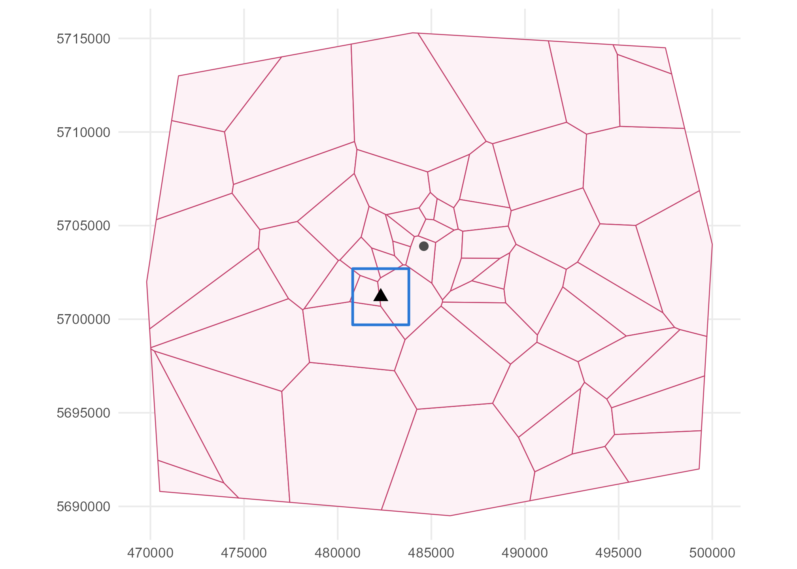

Module 9 · Lesson 1 of 13 Week 133 of 160 About 5–7 hours
Spatial data and maps
Where things are, and why it matters
Start Module 9 with the three kinds of spatial data (measurements at points, values for areas, and the locations of events) and the machinery that holds them: coordinate reference systems, sf objects, distances, buffers, spatial joins and maps. The running story is the plant’s legacy: mercury in the soil around a cell room that closed in 2017.
So far, every observation in this course has been a row that could be shuffled without losing anything. Module 9 follows STAT 586, spatial-temporal statistics, where that’s no longer true: each observation has a place, often a time, and observations close together tend to be alike. That’s both a problem (the methods of Modules 2 and 7 assume independence) and an opportunity (a measurement tells you something about its neighbours, so you can predict where you haven’t measured).
The plant’s history gives us plenty to work with. Until 2017, it made chlorine in a mercury cell room, as many chlor-alkali plants did, and for fifty years a little mercury escaped through the roof vents and settled on the land around. Hana, from environmental engineering, has the results of two soil surveys, and the questions every regulator asks: where is the contamination, how much is there, and how sure are we?
Welcome to Module 9! From now on, every number has an address. By the end of the module you’ll make maps of what you haven’t measured, with an honest map of how sure you are beside each one.
In this lesson you’ll:
- recognize the three kinds of spatial data: geostatistical, areal and point patterns
- turn a table with coordinates into an
sfobject, with the right coordinate reference system - compute distances and buffers, and see why longitude and latitude aren’t distances
- read polygons from a GeoJSON file, transform them, and compute areas
- join points to the areas they fall in, and draw maps with
ggplot2
Three kinds of spatial data
Spatial statistics has three branches, one for each kind of data, and this module covers all three:
- Geostatistical data: a quantity that exists everywhere, measured at chosen points. Mercury in soil, groundwater levels, air temperature. The question is usually what is it at the places we didn’t measure? Lessons 2 to 5.
- Areal (lattice) data: one value per area, such as a district’s population or its number of hospital admissions. There’s nothing between the areas to predict; the questions are about patterns and their causes. Lessons 6 and 7.
- Point patterns: the locations of events, such as leaks, corrosion pits or crystals. The locations themselves are the data, and the question is whether they cluster, repel, or follow a covariate. Lessons 8 and 9.
Then Lessons 10 to 13 add time: measurements at fixed places that change from day to day, and fields that evolve.
Here’s the soil survey. soil_mercury.csv has 200 topsoil samples (0 to 10 cm deep):
| Column | What it is |
|---|---|
sample |
sample ID |
x, y |
coordinates, metres (UTM zone 32N, EPSG:32632) |
campaign |
“plant 2018”: 56 samples targeted within 600 m of the cell room; “grid 2019”: 144 on a 250 m grid over 3 × 3 km |
land_use |
plant site, residential, farmland or woodland |
hg_mgkg |
total mercury, mg per kg of dry soil |
The setup code reads it, and stores the cell room’s coordinates.
Coordinates and sf objects
A coordinate pair means nothing without its coordinate reference system (CRS): the rules that connect the numbers to a place on Earth. There are two families:
- Geographic CRSs give longitude and latitude, in degrees, on an ellipsoid. EPSG:4326 (WGS 84, what GPS uses) is the standard one.
- Projected CRSs flatten a region of the Earth onto a plane, so that coordinates are in metres and distances can be computed with Pythagoras. The UTM system cuts the world into 60 zones, each 6° of longitude wide; inside its zone, a UTM projection distorts distances by less than 0.1%. This plant is in zone 32N, EPSG:32632.
The sf package (“simple features”) stores spatial data as a data frame with a geometry column, plus the CRS. st_as_sf() builds one from a table with coordinate columns.
Your turn. Make soil_sf, telling st_as_sf() which columns are the coordinates and which CRS they’re in. Print the first three rows and find the CRS’s EPSG code.
UTM zone 32N is EPSG code 32632.
soil_sf <- st_as_sf(soil, coords = c("x", "y"), crs = 32632)
print(soil_sf[1:3, ])
st_crs(soil_sf)$epsgThe x and y columns have become a geometry column of POINTs, and the header says “Projected CRS: WGS 84 / UTM zone 32N” and gives the bounding box: the survey covers 480,860 to 483,744 m east and 5,699,776 to 5,702,642 m north, a square about 2.9 km across. Every other column is carried along unchanged, so soil_sf still works like a data frame.
Your turn. How far is each sample from the cell room? Make the cell room a point with st_sfc(st_point(...)), in the same CRS, then use st_distance(). Summarize the distances, and count the samples within 500 m.
The distance from every sample to cell_room.
soil_sf <- st_as_sf(soil, coords = c("x", "y"), crs = 32632)
cell_room <- st_sfc(st_point(cell_room_xy), crs = 32632)
d <- as.numeric(st_distance(soil_sf, cell_room)) # metres
print(summary(d))
sum(d < 500)From 9 m to 2,038 m, with a median of 915 m; 53 samples lie within 500 m. st_distance() returns a matrix (here 200 × 1) with units attached (“[m]”); as.numeric() drops them. In a projected CRS, this is just Pythagoras on the coordinates.
Your turn. A buffer is the area within a given distance of a geometry. Draw a 1 km buffer around the cell room, find which samples fall inside it with st_intersects(), and compare the median mercury inside and outside.
The distance is in the CRS’s units: metres.
soil_sf <- st_as_sf(soil, coords = c("x", "y"), crs = 32632)
cell_room <- st_sfc(st_point(cell_room_xy), crs = 32632)
zone <- st_buffer(cell_room, 1000) # a disc, 1 km radius
inside <- st_intersects(soil_sf, zone, sparse = FALSE)[, 1]
c(n_inside = sum(inside), median_inside = median(soil$hg_mgkg[inside]),
median_outside = median(soil$hg_mgkg[!inside]))108 samples within 1 km, with a median of 1.19 mg/kg, against 0.25 mg/kg outside. Natural background for mercury in topsoil is about 0.05 to 0.1 mg/kg, so even the outside median is raised. st_intersects() is one of a family of spatial predicates (st_within(), st_touches(), st_crosses(), …); with sparse = FALSE it returns a TRUE/FALSE matrix.
Longitude and latitude aren’t distances
Your turn. The regulator’s database wants the cell room’s location in longitude and latitude. Transform the point to EPSG:4326 with st_transform().
WGS 84 longitude and latitude is EPSG:4326.
cell_room <- st_sfc(st_point(cell_room_xy), crs = 32632)
st_coordinates(st_transform(cell_room, 4326))8.7452° east, 51.4617° north. st_transform() doesn’t just relabel the CRS; it recomputes every coordinate (st_set_crs(), by contrast, only relabels, which is how wrong maps get made). The location is invented, by the way: the course’s data use a real CRS so that the tools work, but don’t describe a real place.
A degree of latitude is always about 111 km. A degree of longitude is 111 km at the equator, and 111 \cos(\text{latitude}) km elsewhere: at 51.5° north, only 69 km. So distances computed with Pythagoras on longitude and latitude are wrong, and wrong differently in different directions.
Your turn. Take samples 1 and 200, and compute their distance three ways: in UTM, with st_distance() on their longitudes and latitudes (sf then computes the distance on the sphere), and naively, as the Euclidean distance in degrees times 111,320 m.
Multiply by 111320, the metres in one degree at the equator.
soil_sf <- st_as_sf(soil, coords = c("x", "y"), crs = 32632)
two <- soil_sf[c(1, 200), ]
two_ll <- st_transform(two, 4326)
xy <- st_coordinates(two_ll)
c(utm = as.numeric(st_distance(two[1, ], two[2, ])),
sphere = as.numeric(st_distance(two_ll[1, ], two_ll[2, ])),
naive = sqrt(sum((xy[1, ] - xy[2, ])^2)) * 111320)2,149 m in UTM and 2,145 m on the sphere (UTM’s distortion is tiny), but 3,115 m naively, 45% too much, because the two samples are mostly east-west of each other and a degree of longitude here is only 69 km. Every method in this module (variograms, kriging, neighbours, K functions) computes distances, so the first step of every analysis is to put the data in a projected CRS.
Polygons: the districts
The county’s 60 districts come as a GeoJSON file, a text format for geometries that’s always in longitude and latitude (EPSG:4326). district_health.csv has each district’s population and health data, which Lessons 6 and 7 analyze.
Your turn. Read the districts with st_read(), check their CRS, transform them to UTM, and compute the total area in km².
Transform to the same CRS as the soil data, 32632.
dis <- st_read("data/districts.geojson", quiet = TRUE)
print(st_crs(dis)$epsg)
dis <- st_transform(dis, 32632)
sum(as.numeric(st_area(dis))) / 1e6 # km2The file is in EPSG:4326, as GeoJSON always is. In UTM, the county covers 693.5 km², from districts of 0.7 km² in the town to 45 km² in the countryside. (st_area() on the longitude and latitude version also works, on the sphere, and gives 691.5 km²; the 0.3% difference is UTM’s distortion at the edges of the zone and the sphere’s simplification of the Earth’s shape.)
Your turn. Attach the health data to the polygons with merge() (an sf object merged with a data frame stays an sf object), compute the population density, and find the three densest districts.
Both tables have a district column.
dis <- st_transform(st_read("data/districts.geojson", quiet = TRUE), 32632)
health <- read.csv("data/district_health.csv")
dis <- merge(dis, health, by = "district")
dis$density <- dis$population / (as.numeric(st_area(dis)) / 1e6) # people per km2
st_drop_geometry(dis[order(-dis$density), c("district", "name", "density")])[1:3, ]Castle Gate (D26), with 3,965 people per km², then Market Hill (1,940) and Station Road (1,834), all in the town north-east of the plant. st_drop_geometry() turns the result back into a plain data frame, which prints more compactly.
Spatial joins and maps
A spatial join attaches to each feature the attributes of the features it intersects: here, to each soil sample, the district it lies in.
Your turn. Join the samples to the districts with st_join(), and count the samples in each district.
Keep the districts’ name column.
soil_sf <- st_as_sf(soil, coords = c("x", "y"), crs = 32632)
dis <- st_transform(st_read("data/districts.geojson", quiet = TRUE), 32632)
joined <- st_join(soil_sf, dis[, "name"])
table(joined$name)The 200 samples fall in six districts: 100 in Canal Side, the district that contains the plant, 49 in Kingsmead, 32 in Dunham, 10 in Lime Kiln, 5 in Chapel End and 4 in Barton. Both layers must be in the same CRS; sf refuses to join layers whose CRSs differ, which is a good thing.
ggplot2 draws sf objects with geom_sf(), which reads the geometry and the CRS by itself. Mercury varies over two orders of magnitude, so a log color scale shows it best.
Your turn. Map the samples, colored by mercury on a log scale, on top of the district boundaries, cropped to the survey area.
A log scale: trans = "log10".
soil_sf <- st_as_sf(soil, coords = c("x", "y"), crs = 32632)
dis <- st_transform(st_read("data/districts.geojson", quiet = TRUE), 32632)
ggplot() +
geom_sf(data = dis, fill = "white", color = "grey60") +
geom_sf(data = soil_sf, aes(color = hg_mgkg), size = 2) +
scale_color_viridis_c(trans = "log10", name = "Hg, mg/kg") +
coord_sf(xlim = c(480800, 483800), ylim = c(5699700, 5702700), datum = st_crs(32632)) +
theme_minimal()The highest values cluster around the cell room, in the middle, but the cloud of raised values isn’t round: it stretches toward the north-east, the direction the prevailing south-westerly wind blew the vent emissions. That stretch will come back in Lesson 3 as anisotropy. datum = st_crs(32632) labels the axes in UTM metres instead of degrees.

Challenge round
Challenge 1 · Land use. For each land use, find the share of samples above 1 mg/kg, a common screening value for gardens and play areas.
Compare with 1.
round(tapply(soil$hg_mgkg > 1, soil$land_use, mean), 3)75% on the plant site, 14% of the farmland, 10% of the residential samples (2 of 20) and none in the woodland. The two residential samples are the ones that matter most, and they lie to the north-east. But this table treats the samples as if they were a random sample of each land use, and they aren’t: 50 of the 65 plant-site samples come from the targeted 2018 campaign, which went where mercury was expected. A share of samples isn’t a share of area. Kriging (Lesson 4) turns samples into an estimate for every square metre, which can be summed honestly.
Challenge 2 · The third kind of data. The plant’s 2025 leak survey found leaking flanges and valves. Their locations are in site_leaks.csv, in site coordinates: metres from the south-west corner of the fence, a local CRS that sf knows nothing about. Read them, count the leaks by component, and work out why sf’s crs = NA is the right choice here.
The column is component.
leaks <- read.csv("data/site_leaks.csv")
leaks_sf <- st_as_sf(leaks, coords = c("x", "y"), crs = NA)
print(st_crs(leaks_sf))
table(leaks_sf$component)205 leaks: 85 flanges, 69 valves, 29 connectors and 22 pump seals. With crs = NA, sf treats the coordinates as plain Cartesian numbers, which is exactly what local site coordinates are: distances and areas work, in metres, but sf won’t pretend to know where on Earth they are. Pretending (say, by labelling them UTM) would silently put the plant in the wrong place. For a point pattern, the interesting thing is the locations themselves, and Lessons 8 and 9 analyze them with the spatstat package.
Quick quiz
1. Mercury measured at 200 soil samples is an example of:
The quantity exists everywhere; the samples are where it was measured.
2. The number of hospital admissions in each of 60 districts is:
One value per area, with nothing in between to predict.
3. Why put data in a projected CRS such as UTM before analyzing it?
In longitude and latitude, a degree east and a degree north are different distances.
4. What does st_transform() do?
st_set_crs() relabels; st_transform() converts.
5. What does st_join(points, polygons) add to each point?
By default it joins by intersection.
6. 75% of the plant-site samples exceed 1 mg/kg. Why isn’t that 75% of the plant site’s area?
Preferential sampling: a share of samples is only a share of area if the samples were spread at random or on a grid.
Wrap-up
You’ve set up the machinery for the whole module. Here’s what you’ve learned:
- Three kinds of spatial data: geostatistical (soil mercury), areal (district admissions) and point patterns (leaks).
- A CRS gives coordinates their meaning. Work in a projected CRS (UTM zone 32N, EPSG:32632, here); longitude and latitude distances computed naively were 45% wrong.
- sf objects are data frames with a geometry column:
st_as_sf(),st_read(),st_transform(),st_distance(),st_buffer(),st_area(),st_join(). - The soil survey: within 1 km of the cell room, a median of 1.19 mg/kg against 0.25 outside, with raised values stretched toward the north-east.
- Samples aren’t area: the targeted campaign makes simple shares misleading, which is a reason for the spatial prediction of Lessons 3 to 5.
TipPractice in RStudio (optional, about an hour)
Download soil_mercury.csv and districts.geojson into your project’s data-raw/ folder, and install sf.
- Write a GeoPackage. Save the soil samples with
st_write(soil_sf, "soil.gpkg")and open it in QGIS (free) if you have it. GeoPackage is the modern replacement for shapefiles. - An interactive map. Install mapview and run
mapview::mapview(soil_sf, zcol = "hg_mgkg"). Since the location is invented, the background map will show wherever 8.75° E, 51.46° N happens to be. - Distances to a line. Make the motorway a line with
st_linestring()(it runs from (487200, 5689000) to (488400, 5715000)), and compute each district’s distance to it withst_distance(). - Areas by land use. Make a 50 m grid over the survey square with
st_make_grid(), and count how many cells lie within 1 km of the cell room. What area is that, and how does it compare with the 108 samples?
NoteKey words from this lesson
- Geostatistical data
- Measurements of a quantity that exists everywhere, taken at chosen locations.
- Areal (lattice) data
- One value for each area of a partition, such as districts.
- Point pattern
- The locations of events in a region; the locations themselves are the data.
- Coordinate reference system (CRS)
- The rules connecting coordinates to places on Earth, identified by an EPSG code.
- Geographic and projected CRS
- Longitude and latitude in degrees (EPSG:4326) versus flat coordinates in metres (such as UTM).
- Simple features (sf)
- The standard way to store points, lines and polygons with their attributes; in R, the sf package.
- Buffer
- The area within a given distance of a geometry.
- Spatial join
- Attaching to each feature the attributes of the features it intersects.
- Preferential sampling
- Choosing sampling locations where high (or low) values are expected, which biases simple summaries.
NoteWant to read more?
- Edzer Pebesma and Roger Bivand, Spatial Data Science with Applications in R (free online), chapters 1 to 3 and 7, on coordinates, geometries and sf. This module’s main reading for Lessons 1 to 9.
- Robin Lovelace, Jakub Nowosad and Jannes Muenchow, Geocomputation with R (free online), chapters 2 to 4 and 7, on spatial data, operations and reprojection, with many more examples.
- Noel Cressie, Statistics for Spatial Data (revised edition, Wiley, 1993), chapter 1, the classic statement of the three kinds of spatial data.